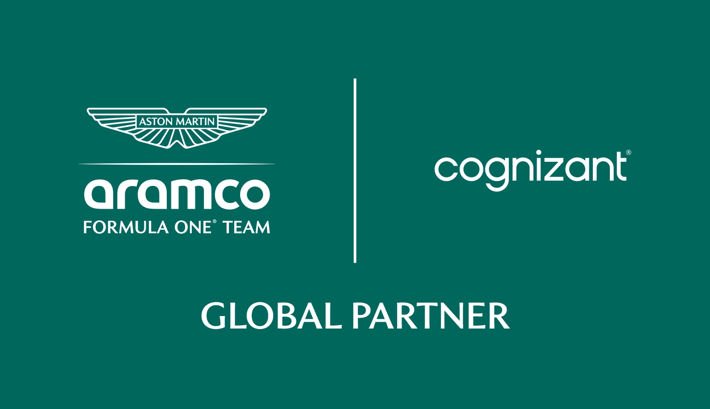
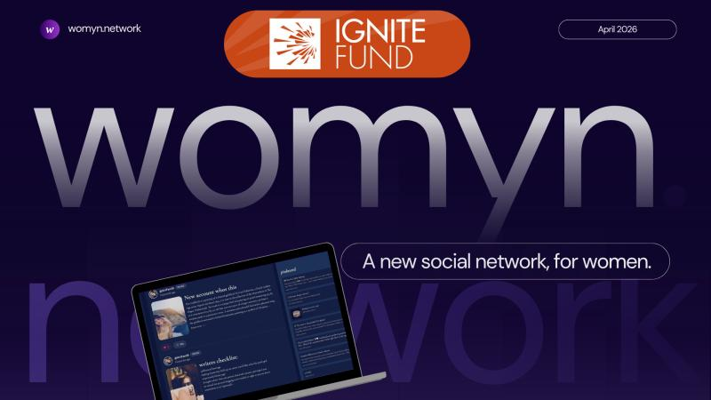
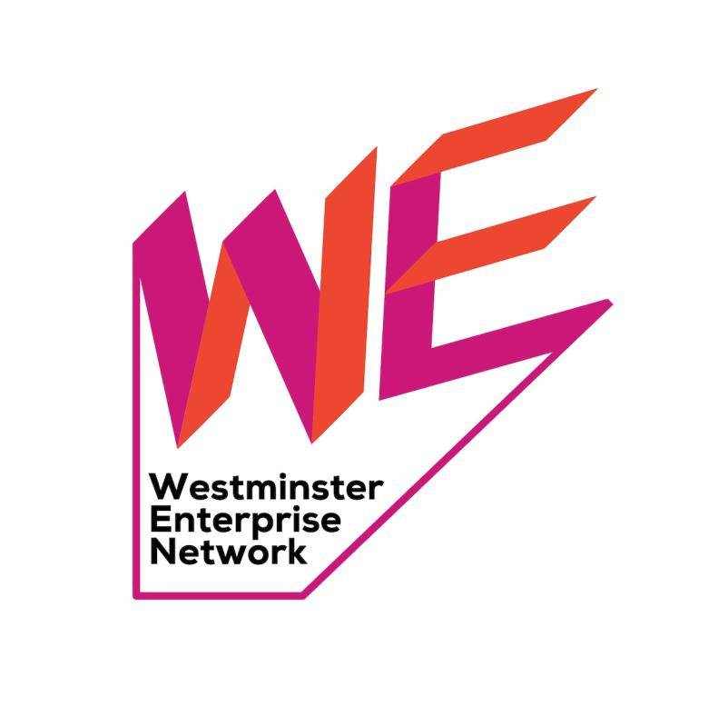

Fridalí Gaias
First-Class CS graduate, incoming Graduate Software Engineer at Dexory in Wallingford, with experience across AI, robotics, full-stack development, and research.
Experience
Graduate Software Engineer
Dexory · Wallingford
- Joining the core technology team through a rotating graduate programme across software systems that support autonomous warehouse robotics.
- Expected to gain exposure across autonomy, AI/perception, platform engineering, production code, Linux-based systems, CI/CD, and scalable infrastructure.
- Starting on 7 September 2026.
Founding Engineer
Skinario
- Sole technical lead responsible for designing and building the MVP of an AI-powered consumer platform from concept to beta release.
- Own full-stack engineering, product architecture, technical strategy, data systems, infrastructure, and scalability decisions.
- Collaborate directly with the founder to translate product vision into scalable technical solutions.
Research Assistant
University of Westminster
- Project: AI for Better Learning: Automating Organisation of Learning Concept Maps to Improve Student Understanding.
- Developed and evaluated an LLM-powered educational chatbot for automated concept-map generation.
- Worked with LLM pipelines and graph-based methods to structure and validate complex educational content.
Founder & Developer
womyn.network
- Lead development of a security-first SPA with defensive AI and edge-based processing for privacy-preserving social features.
- Awarded the University of Westminster Ignite Fund for Phase 2 development.
Currently...
Selected Projects
Engineering a Security-First SPA: Implementing Edge-Based Defensive AI

Autonomous Robot Navigation
Implemented a Q-learning algorithm (Python/NumPy) for autonomous navigation in unknown environments. Evaluated performance against an MLP model, analysing limitations of supervised learning.
Risk-Aware Pedestrian Navigation
Built a custom A* search algorithm in Python to optimise walking routes based on distance and safety risk. Integrated OpenStreetMap data with 1M+ Police.uk crime records using efficient spatial indexing.
Dynamic Control System Modelling
Modeled a non-linear two-tank fluid system using MATLAB and Simulink. Designed a closed-loop PID controller for autonomous level regulation and conducted stability analysis using Bode and step response methods.
Medical Survival Prediction System
Built classification and regression models (k-NN, Logistic Regression, Decision Trees) to predict patient mortality and survival time. Applied rigorous preprocessing, GridSearchCV optimisation, and validation.
SKY Health Check Django App
Developed a responsive, user-focused full-stack platform using Python and Django. Implemented core user flows, enhancing usability, and took a leading role in planning, organisation, and UX/UI design.
QuGUI: Qubit Dynamics Research Tool
Developed a Python GUI for numerical experiments on isolated qubit dynamics with ECT*, FBK and the European Centre for Theoretical Studies, supervised by Dr. Giovanni Garberoglio.
Skills
Tools & Languages
TensorFlow, TF.js, Firebase / Firestore, Parcel, JavaScript, HTML, CSS, Python, Git, Java, Node.js, SQL, Postman, Jupyter Notebook, MATLAB, Simulink, Kali Linux tools, Tkinter
AI, Systems & Security
Model Integrations, LLMs, Adversarial ML, Machine Learning Techniques, Model Evaluation, Edge Computing, AI Methodologies & Ethics, OOP, Database Management, Software Development Principles, Product Deployment, SEO, UX/UI Design, Cybersecurity Principles
Communication
English, Spanish, Italian
Education, Honors & Certifications
BSc (Hons) Computer Science
University of Westminster (Sep 2022 - May 2026)
Engineering a Security-First SPA: Implementing Defensive AI for an Edge-Based Woman-Only Social Web Application
Computer Systems & Networks, Software Development, Trends in CS, Computer Systems Fundamentals, Web Design & Development, OOP, Database Systems, Client-Server Architectures, Machine Learning & Data Mining, Robotic Principles, Applied Robotics, Applied AI, Digital Marketing, Social Media & Web Analytics, Cyber Security.
Honors, Awards & Activities
F1 AI & Innovation Ideathon
Cognizant x Aston Martin F1 (May 2026 - July 2026)
- Selected as one of 15 students for a competitive industry programme.
- Developed AI-driven concepts for fan engagement, real-time content, and data-driven storytelling; explored GenAI and predictive systems in sports marketing.
- Collaborated in a team environment with mentorship from industry professionals.
- Preparing a final presentation at Aston Martin F1 Headquarters to pitch solutions to stakeholders.

AI Pathways Scholarship
Cognizant, APMG International & Cloud Crew (2026)
- Winner of a fully funded place on the APMG Artificial Intelligence Practitioner course.
- Includes a Tech4Good placement with Cloud Crew, delivering pro-bono technical solutions for charities and NGOs.
Ignite Fund Award for womyn.network
University of Westminster · Apr 2026
Awarded the Ignite Fund in support of womyn.network, my final year project: a security-first social web application focused on women's safety and privacy online. The funding supports the continued development of the platform and its technical infrastructure.

WeNetwork Validate Programme Grant Recipient
WeNetwork, University of Westminster · Jun 2026
Awarded a £2,500 grant through the WeNetwork Validate Programme to further develop my final-year research project: a female-first social networking platform integrating Defensive AI to help protect users' images against scraping, impersonation, and AI-generated manipulation.
Selected based on the strength of the project proposal and research, with funding supporting continued development as part of the Validate cohort.

Certifications
Agile Software Development
Transforming Your Organization · LinkedIn Learning
Python for Object-Oriented Programming
LinkedIn Learning
Simulink Onramp
MathWorks
Android Mobile Certificate
Google via Three UK
Lab Safety Certificate
University of Trento